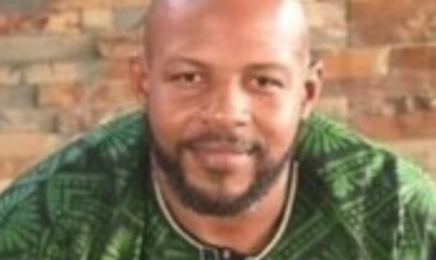
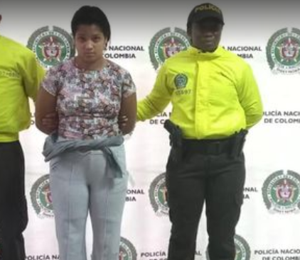
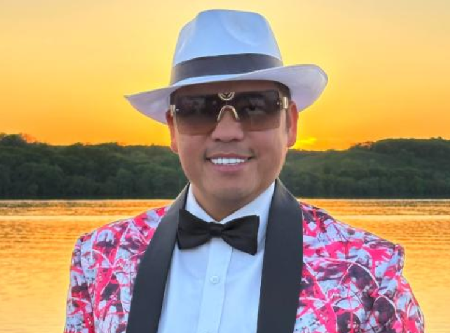

Su muerte se reportó a inicios de noviembre. Según las primeras informaciones, había llegado a la ciudad para celebrar su cumpleaños."Johny Jerome era un amado hijo, hermano, tío y amigo. Lamentablemente, nos dejó el día de su cumpleaños", escribió su familia en el obituario.
Un primo, con el que viajaba, aseguró que habían departido con dos mujeres, quienes abandonaron el lugar en la madrugada. Horas después, Jerome, de 45 años y nacido en Nueva York, apareció sin vida en el jacuzzi. No tenía signos de violencia.

Estas son las únicas muertes, dentro del periodo analizado por la Embajada, que no están vinculadas a robos, homicidios o drogas.
Los estadounidenses resultaron heridos tras la explosión de una chimenea en un apartamento de Medellín. Por las graves quemaduras en sus cuerpos, alcanzaron a recibir atención médica; sin embargo, fallecieron. Andrew Shoyoye, administrador de empresas, estaba por cumplir los 40 años, así que había llegado a Colombia como parte de unas vacaciones.
El hombre, de 55 años, fue hallado muerto el 11 de noviembre en la habitación de un hotel, ubicado en el sector de El Poblado. Tenía más de 20 heridas por arma cortopunzante.Jeffrey Hutson Hewett era licenciado en Comunicaciones y estaba vinculado a una empresa de ventas, "especializada en la preparación de ofertas para universidades y agencias gubernamentales de California", se lee en su obituario.
Una joven, de 18 años, fue enviada a la cárcel por este caso tras ser acusada del asesinato. "Los investigadores establecieron que ese día, el extranjero ingresó con la procesada al lugar donde ocurrieron los hechos", dijo Yuri Amado, directora de la seccional de Fiscalía en Medellín.
Petreanu, también de 55 años, fue asesinado el 14 de noviembre. Era originario de Aventura, Florida. A partir del reporte de las autoridades, el estadounidense salía de un establecimiento en El Poblado con una mujer cuando fue interceptado por hombres que pretendían robarlo.
"En un forcejo, uno de los delincuentes esgrime un arma de fuego y le ocasiona una herida al ciudadano extranjero, quien de manera inmediata es llevado a un centro asistencial donde fallece", expresó el coronel Richard Fajardo, de la Policía Metropolitana del Valle de Aburra, en su momento.
Se capturaron a dos personas para que respondieran por el homicidio. Además, se les incautó una moto.

Al estadounidense, de 34 años, lo encontraron sin vida en una casa de la Loma de las Brujas, en Envigado, que había alquilado en su visita a Antioquia. Según las primeras informaciones, allí estaba departiendo con una mujer que conoció por medio de internet.
El crimen, que fue reportado en la madrugada del 26 de noviembre, se habría perpetrado con una cruceta que las autoridades inspeccionaron en el lugar. La hipótesis del caso es que se habría tratado de un robo.
El asiático-americano apareció muerto en la quebrada La Corcovada, de Medellín. El hombre, de 50 años, era un reconocido comediante, conferencista y activista.
Arribó a Medellín a finales de noviembre. De hecho, estuvo en el concierto de la cantante Karol G. En su paso por Colombia, se había citado con una mujer que habría conocido por medio de redes sociales.
Fue herido con arma cortopunzante y se presume que lo lanzaron a la quebrada desde una altura de 15 metros. "Tou Ger Xiong es más que un solo hombre; ejemplifica los roles de hijo, hermano, tío, sobrino, entre otros. Es un miembro crucial de la comunidad", comentó su familia para lamentar el asesinato.
El hombre, originario de Tennessee, habría fallecido por una sobredosis de sustancias psicoactivas al interior de la habitación de un hotel en Medellín. Había sido visto el 15 de diciembre de fiesta con sus amigos en la ciudad. Cuando fueron a buscarlo en el hotel a la mañana siguiente no abrió la puerta, por lo que se requirió de la presencia de las autoridades.
Tenía una hija con Allie Pitman, quien abrió una recolecta de fondos en la plataforma GoFundMe para apoyar el traslado de los familiares a Colombia con tal llevar el cuerpo de Ryan Mullins.